Why multimedia Design?
My journey into multimediadesign and the creative path that feels right for me.
01Step inside
At first, I thought about studying Design Technology, but since it's only located in Herning and Kolding, I decided against it, since I really enjoy living in Aarhus.
Instead, I found Multimedia Design, which turned out to be a great fit for me. I love that it combines creativity and business, and that there's an opportunity to continue with a top-up later. I study at IBA Erhvervsakademi Kolding and it's an online class.
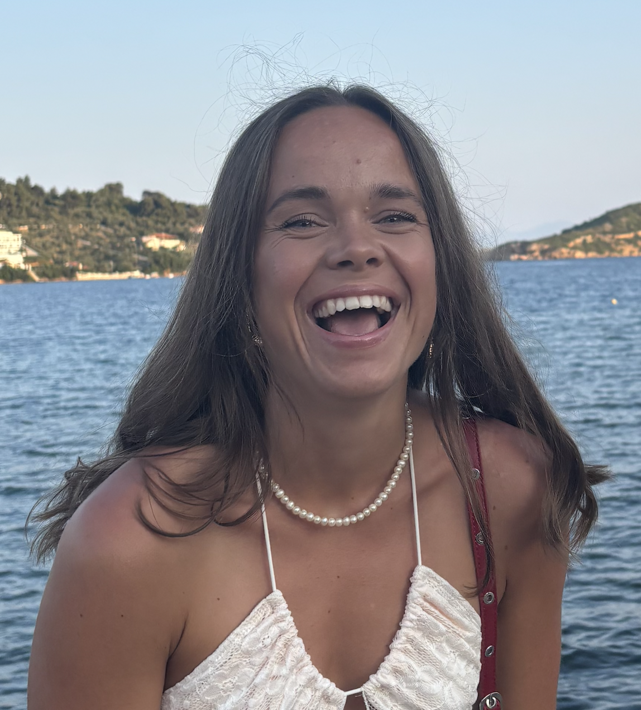
02Study trip
Below are some pictures from my trip to Barcelona with my school. Seven of us were from the online class, while the rest were from the in-person class.
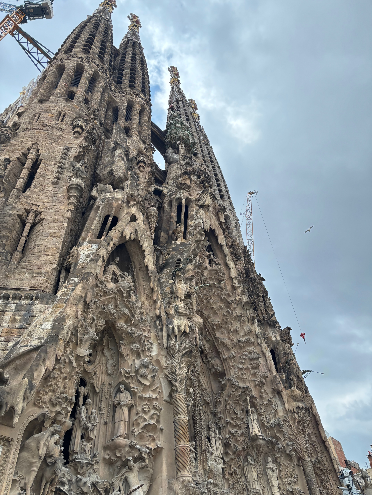
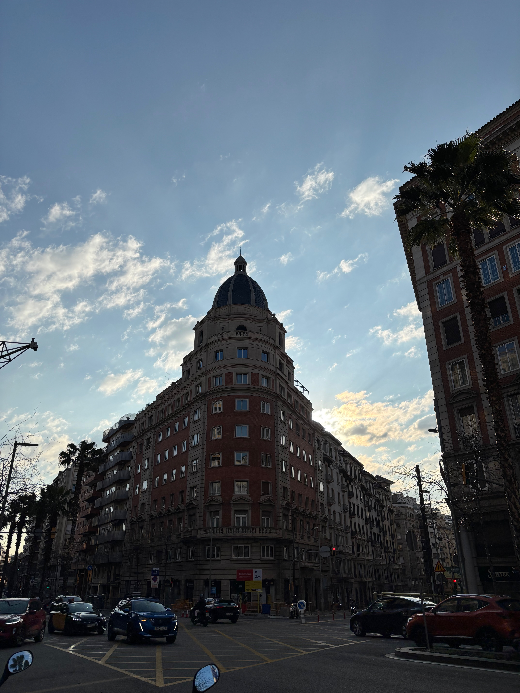
I enjoy learning a lot of different things, because I like having variety and the freedom to switch between tasks. For me, that's what keeps things exciting and motivating. And then it was really interesting in Barcelona, because they have so many beautiful design around. Definitely not last time there.
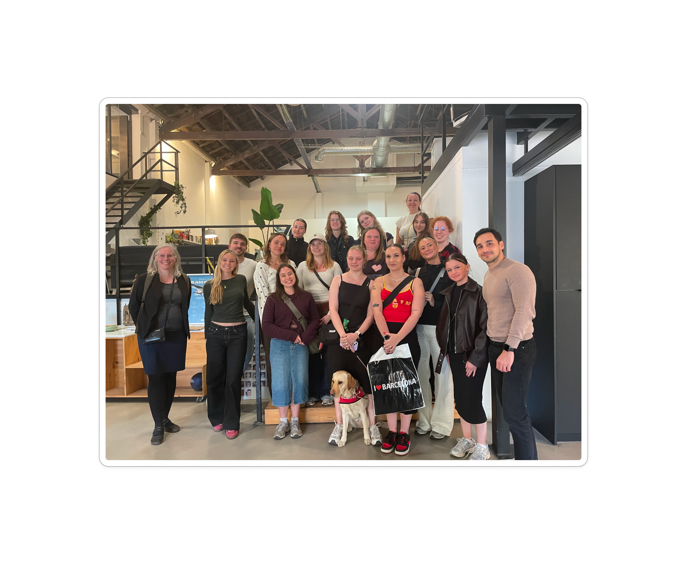
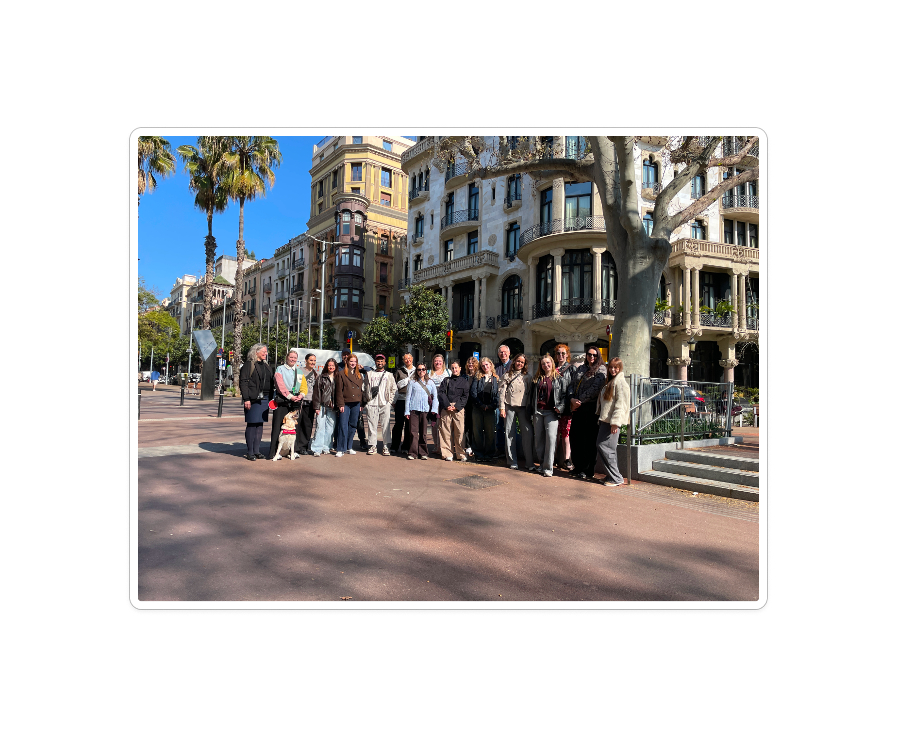
03Visits
During our study trip, we visited a creative company, Firma and gained insight into how they develop ideas and create solutions for their clients.
We also visited two different schools: IED Barcelona, a design school offering a variety of creative disciplines, and TecnoCampus, where we explored media studios, technology, and different approaches to digital learning.
IED Barcelona
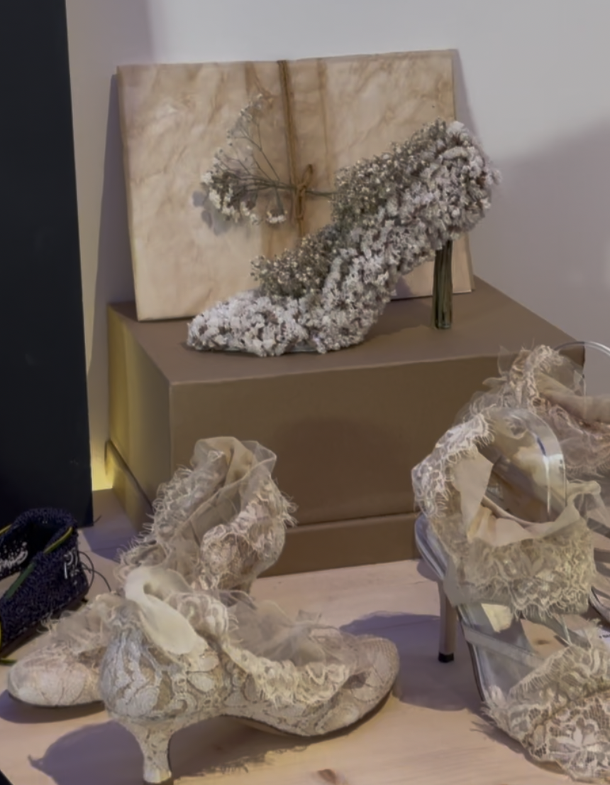
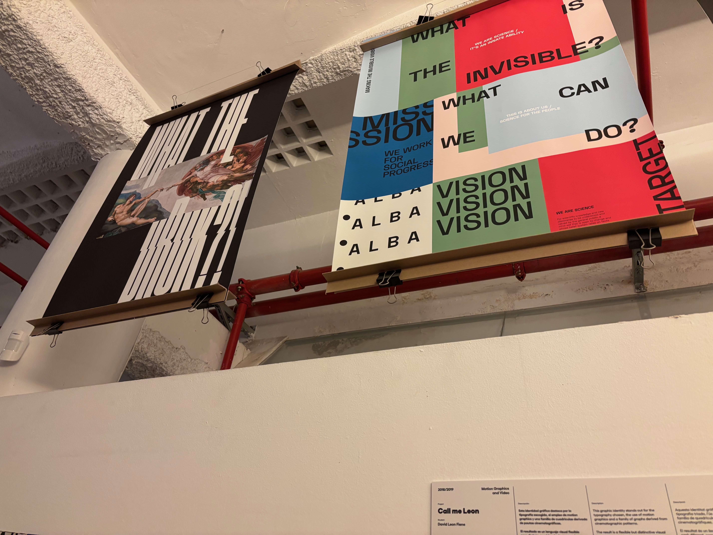
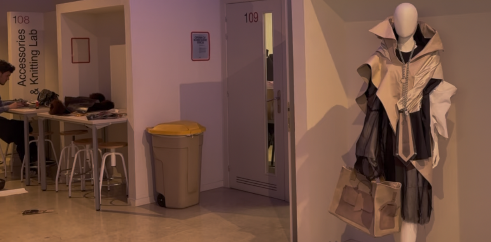
TecnoCampus, Mataró
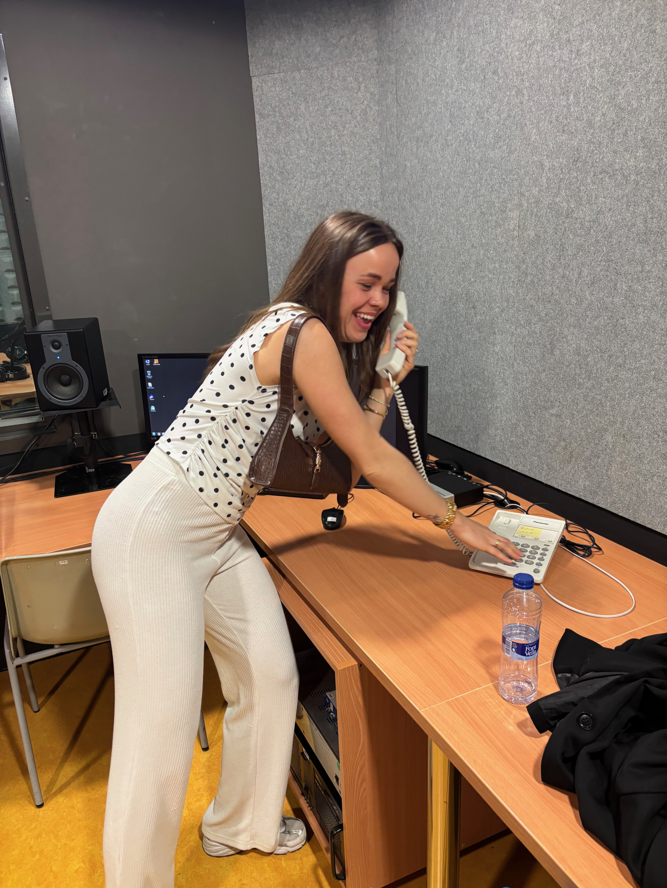
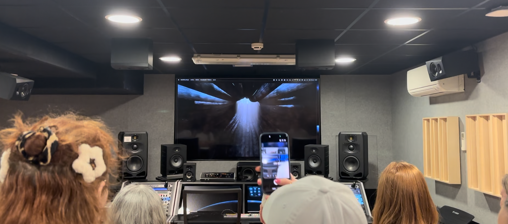
Firma
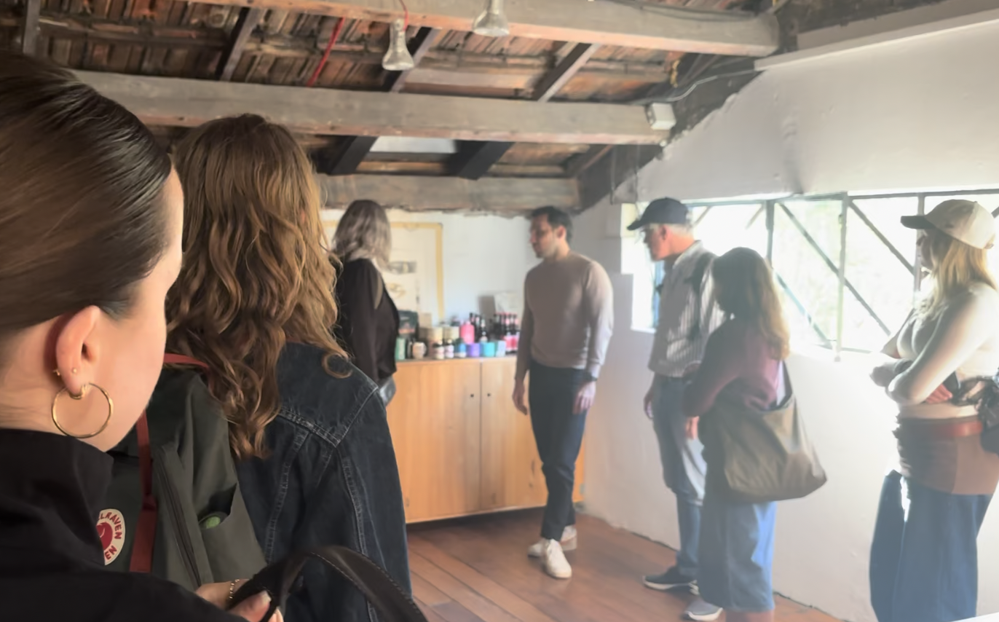
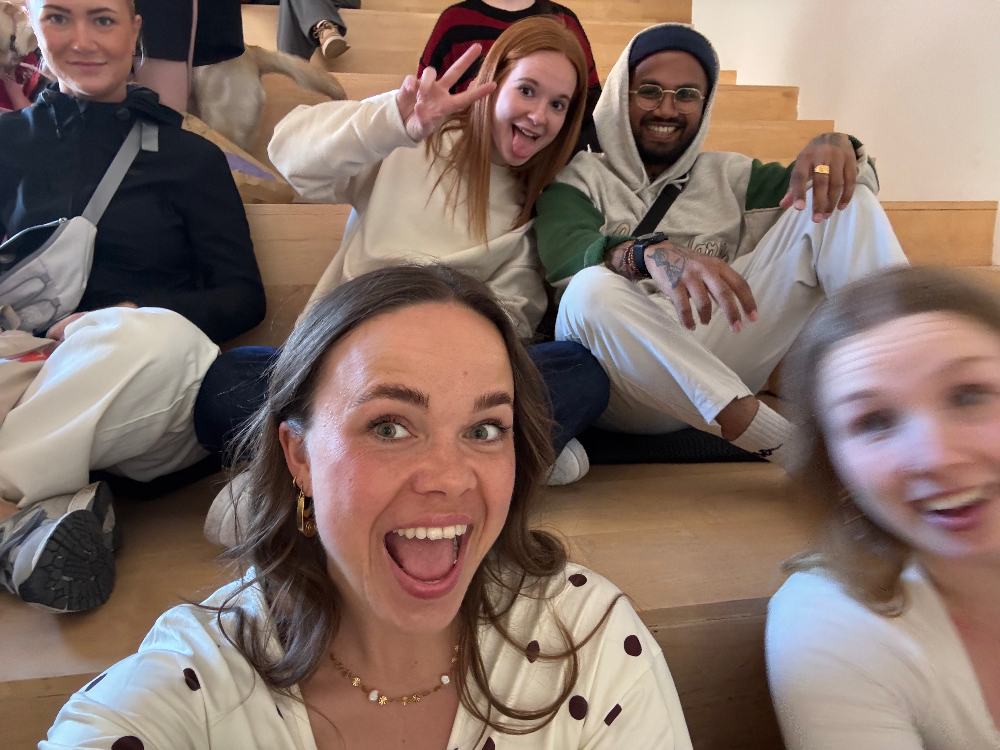
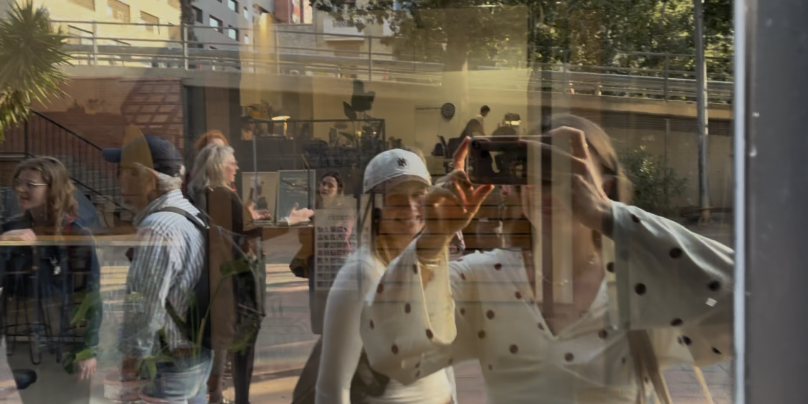